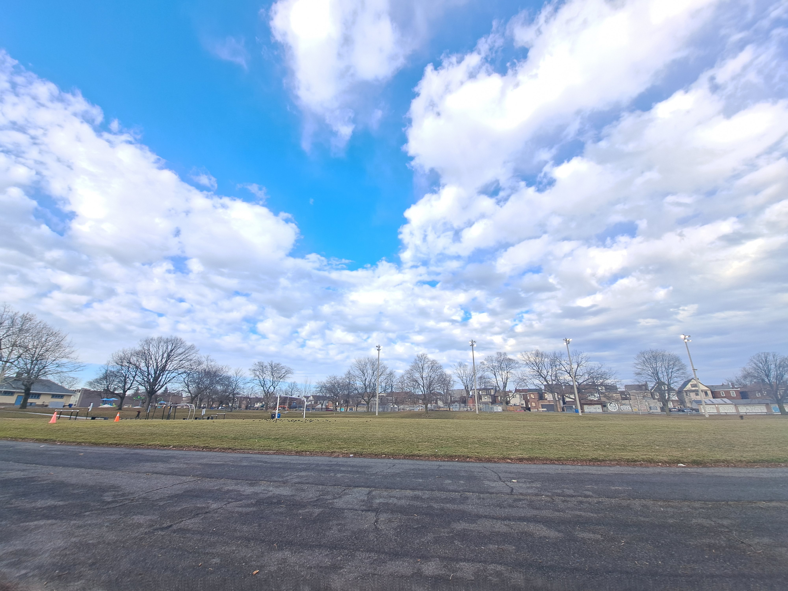
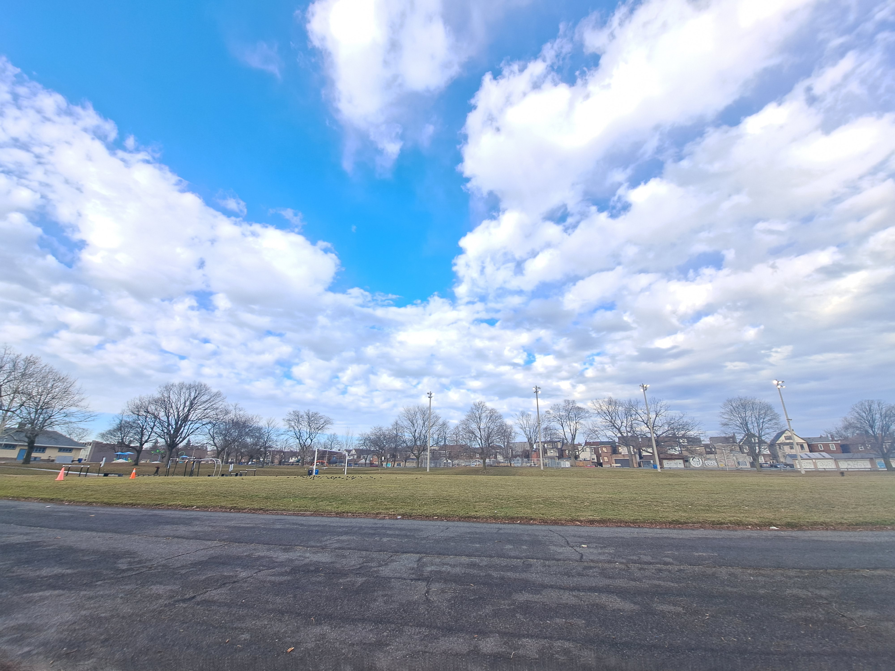

😀PARKS IN TORONTO 😀
My favorite place to be since I moved to Toronto are parks. Earlscourt Park is one of my favorite. Here are some things to do in park:
- It is great for physical activities. I can run and walk under the vast sky and breathe fresh air releases by trees around.
- Best thing about parks is it is free and for everyone.
- Park is the right place to spend quality with a dog, a friend or family.
- Parks brings the community together.
Earlscourt Park


 
